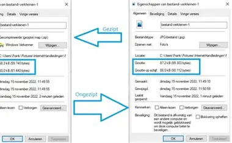

Compressie
Compressie betekent dat je gegevens kleiner maakt, zodat ze minder opslagruimte gebruiken of sneller verstuurd kunnen worden. Dit kan bijvoorbeeld bij afbeeldingen, video's en andere bestanden.
🟦 Bitmap
Een bitmapafbeelding bestaat uit heel veel kleine pixels. Iedere pixel bevat informatie over bijvoorbeeld de kleur.
Een digitale foto van een telefoon is meestal een voorbeeld van een bitmapafbeelding.
📐 Vector
Een vectorafbeelding bestaat uit lijnen, vormen en wiskundige beschrijvingen.
Hierdoor kan een vectorafbeelding vaak worden vergroot zonder dat de randen wazig worden. Een logo is een veelvoorkomend voorbeeld.

Compressie maakt gegevens kleiner
Bitmap versus vector
Het belangrijkste verschil is de manier waarop de afbeelding wordt opgebouwd. Een bitmap gebruikt pixels, terwijl een vector lijnen en vormen gebruikt.
| Bitmap | Vector | |
|---|---|---|
| Opbouw | Pixels | Lijnen en vormen |
| Voorbeeld | Digitale foto | Logo of pictogram |
| Vergroten | Kan wazig worden | Blijft scherp |
| Bestandsformaat | JPG, PNG | SVG |
Wat heeft dit met compressie te maken?
Compressie zorgt ervoor dat bestanden minder opslagruimte innemen. Bij afbeeldingen kan dit bijvoorbeeld door gegevens slimmer op te slaan of bepaalde informatie weg te laten.
Bij compressie zonder kwaliteitsverlies blijft alle oorspronkelijke informatie behouden. Bij compressie met kwaliteitsverlies wordt een deel van de informatie verwijderd. Hierdoor kan de bestandsgrootte kleiner worden, maar kan de kwaliteit ook afnemen.
🎬 Video over compressie
Waarom deze video?
Deze video is toegevoegd om extra uitleg te geven
over compressie en digitale afbeeldingen. Zo kun je
de theorie beter begrijpen en zien hoe het onderwerp
in de praktijk werkt.